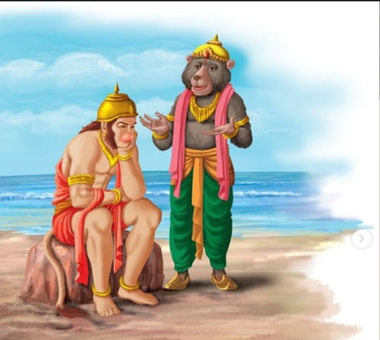

Kishkindhakanda Sarga 66
॥ॐ॥
मनोजवं मारुततुल्यवेगं जितेन्द्रियं बुद्धिमतां वरिष्ठम्।
वातात्मजं वानरयूथमुख्यं श्रीरामदूतं शरणं प्रपद्ये॥
Kishkindhakanda Sarga 66
Description of Hanuman's glory

(38 Shlokas)
अनेकशतसाहस्रीं विषण्णां हरिवाहिनीम्।
जाम्बवान्समुदीक्ष्यैवं हनूमन्तमथाब्रवीत्॥4.66.1॥
Word-by-word meaning: अनेक-शत-साहस्रीम् consisting of many hundreds of thousands, विषण्णाम् dejected, हरि-वाहिनीम् the army of vanaras, जाम्बवान् Jambavan, समुदीक्ष्य having carefully observed, एवम् thus, हनूमन्तम् to Hanuman, अथ then, अब्रवीत् spoke
Anvaya: जाम्बवान् अनेकशतसाहस्रीं विषण्णां हरिवाहिनीम् एवं समुदीक्ष्य अथ हनूमन्तम् अब्रवीत्।
Simple meaning: Jambavan, having carefully observed the army of vanaras consisting of many hundreds of thousands who were dejected, then spoke to Hanuman.
वीर वानरलोकस्य सर्वशास्त्रविदां वर।
तूष्णीमेकान्तमाश्रित्य हनूमन्किं न जल्पसि॥4.66.2॥
Word-by-word meaning: वीर O hero, वानर-लोकस्य of the vanara world, सर्व-शास्त्र-विदाम् among those who know all the shastras, वर O best, तूष्णीम् silent, एकान्तम् in a solitary place, आश्रित्य having resorted to, हनूमन् O Hanuman, किम् why, न not, जल्पसि do you speak
Anvaya: वीर! वानरलोकस्य सर्वशास्त्रविदां वर! हनूमन्! तूष्णीम् एकान्तम् आश्रित्य किं न जल्पसि।
Simple meaning: O hero! O best among the vanaras and among all those who know the shastras! O Hanuman! Why do you remain silent, having withdrawn to a solitary place? Why do you not speak?
हनूमन्हरिराजस्य सुग्रीवस्य समो ह्यसि।
रामलक्ष्मणयोश्चापि तेजसा च बलेन च॥4.66.3॥
Word-by-word meaning: हनूमन् O Hanuman, हरि-राजस्य of the king of vanaras, सुग्रीवस्य of Sugriva, समः equal, हि indeed, असि you are, राम-लक्ष्मणयोः of Rama and Lakshmana, च and, अपि also, तेजसा in radiance, च and, बलेन in strength, च and
Anvaya: हनूमन्! त्वम् हरिराजस्य सुग्रीवस्य रामलक्ष्मणयोः अपि च तेजसा बलेन च समः हि असि।
Simple meaning: O Hanuman, you are indeed equal to Sugriva, the king of the vanaras, and to Rama and Lakshmana, in radiance and in strength.
अरिष्टनेमिनः पुत्रो वैनतेयो महाबलः।
गरुत्मानिति विख्यात उत्तमस्सर्वपक्षिणाम्॥4.66.4॥
Word-by-word meaning: अरिष्टनेमिनः of Arishtanemi, पुत्रः son, वैनतेयः son of Vinata, महा-बलः of great strength, गरुत्मान् Garuda, इति thus, विख्यातः is well known, उत्तमः the best, सर्व-पक्षिणाम् among all birds
Anvaya: अरिष्टनेमिनः पुत्रः वैनतेयः महाबलः, सर्वपक्षिणाम् उत्तमः गरुत्मान् इति विख्यातः।
Simple meaning: The son of Arishtanemi and Vinata, of great strength and the best among all birds is well known as Garuda.
बहुशो हि मया दृष्टः सागरे स महाबलः।
भुजङ्गानुद्धरन्पक्षी महावेगो महायशाः॥4.66.5॥
Word-by-word meaning: बहुशः many times, हि indeed, मया by me, दृष्टः seen, सागरे in the ocean, सः he, महा-बलः of great strength, भुजङ्गान् serpents, उद्धरन् seizing, पक्षी the bird, महा-वेगः of great speed, महा-यशाः of great fame
Anvaya: महाबलः महावेगः महायशाः सः पक्षी सागरे भुजङ्गान् उद्धरन् मया बहुशः दृष्टः।
Simple meaning: That bird of great strength, great speed and great fame has been seen by me many times in the ocean, seizing serpents.
पक्षयोर्यद्बलं तस्य तावद्भुजबलं तव।
विक्रमश्चापि वेगश्च न ते तेनावहीयते॥4.66.6॥
Word-by-word meaning: पक्षयोः in the wings, यत् whatever, बलम् strength, तस्य his, तावत् that much, भुज-बलम् strength of arms, तव your, विक्रमः valor, च and, अपि also, वेगः speed, च and, न not, ते your, तेन to him, अवहीयते is inferior
Anvaya: तस्य पक्षयोः यत् बलं तावत् तव भुजबलम्। ते विक्रमः च वेगः च तेन न अवहीयते।
Simple meaning: Whatever strength Garuda has in his wings, that same strength you possess in your arms. Your valor and speed are in no way inferior to his.
बलं बुद्धिश्च तेजश्च सत्त्वं च हरिपुङ्गव।
विशिष्टं सर्वभूतेषु किमात्मानं न बुध्यसे॥4.66.7॥
Word-by-word meaning: बलम् strength, बुद्धिः intelligence, च and, तेजः radiance, च and, सत्त्वम् courage, च and, हरि-पुङ्गव O best among the vanaras, विशिष्टम् superior, सर्व-भूतेषु among all beings, किम् why, आत्मानम् yourself, न not, बुध्यसे do you know
Anvaya: हरिपुङ्गव! बलं बुद्धिः च तेजः च सत्त्वं च सर्वभूतेषु विशिष्टम्। किम् आत्मानं न बुध्यसे?
Simple meaning: O best among the vanaras, your strength, intelligence, radiance and courage are superior among all beings. Why do you not recognize yourself for what you are?
अप्सराप्सरसां श्रेष्ठा विख्याता पुञ्जिकस्थला।
अञ्जनेति परिख्याता पत्नी केसरिणो हरेः॥4.66.8॥
Word-by-word meaning: अप्सरा an apsara, अप्सरसाम् among the apsaras, श्रेष्ठा the best, विख्याता well known, पुञ्जिकस्थला Punjikasthala, अञ्जना इति known as Anjana, परिख्याता widely renowned, पत्नी wife, केसरिणः of Kesari, हरेः of the vanara
Anvaya: अप्सरसां श्रेष्ठा विख्याता पुञ्जिकस्थला अञ्जना इति परिख्याता केसरिणः हरेः पत्नी।
Simple meaning: The best among the apsaras, well known as Punjikasthala and widely renowned as Anjana, became the wife of Kesari, the vanara.
विख्याता त्रिषु लोकेषु रूपेणाप्रतिमा भुवि।
अभिशापादभूत्तात वानरी कामरूपिणी॥4.66.9॥
Word-by-word meaning: विख्याता well known, त्रिषु in the three, लोकेषु worlds, रूपेण in beauty, अप्रतिमा unrivalled, भुवि on earth, अभिशापात् due to a curse, अभूत् became, तात O dear one, वानरी a female vanara, काम-रूपिणी one who can assume any form at will
Anvaya: तात! त्रिषु लोकेषु विख्याता भुवि रूपेण अप्रतिमा अभिशापात् कामरूपिणी वानरी अभूत्।
Simple meaning: O dear one, she who was well known in all the three worlds and unrivalled in beauty on earth, became a female vanara who could assume any form at will, due to a curse.
दुहिता वानरेन्द्रस्य कुञ्जरस्य महात्मनः।
मानुषं विग्रहं कृत्वा रूपयौवनशालिनी॥4.66.10॥
Word-by-word meaning: दुहिता daughter, वानर-इन्द्रस्य of the king of vanaras, कुञ्जरस्य of Kunjara, महात्मनः of the great souled, मानुषम् human, विग्रहम् form, कृत्वा having assumed, रूप-यौवन-शालिनी endowed with beauty and youth
Anvaya: महात्मनः वानरेन्द्रस्य कुञ्जरस्य रूपयौवनशालिनी दुहिता मानुषं विग्रहं कृत्वा …
Simple meaning: She was the daughter of the great souled Kunjara, the king of the vanaras, and she was endowed with great beauty and youth. Having assumed a human form…
विचित्रमाल्याभरणा महार्हक्षौमवासिनी।
अचरत्पर्वतस्याग्रे प्रावृडम्बुदसन्निभे॥4.66.11॥
Word-by-word meaning: विचित्र-माल्य-आभरणा adorned with varied garlands and ornaments, महा-अर्ह-क्षौम-वासिनी wearing highly valuable silk garments, अचरत् wandered, पर्वतस्य of the mountain, अग्रे on the peak, प्रावृट्-अम्बुद-सन्निभे resembling the clouds of the rainy season
Anvaya: …विचित्रमाल्याभरणा महार्हक्षौमवासिनी प्रावृडम्बुदसन्निभे पर्वतस्य अग्रे अचरत्।
Simple meaning: …adorned with varied garlands and ornaments and wearing highly valuable silk garments, she wandered on the peak of the mountain which resembled the clouds of the rainy season.
तस्या वस्त्रं विशालाक्ष्याः पीतं रक्तदशं शुभम्।
स्थितायाः पर्वतस्याग्रे मारुतोऽपहरच्छनैः॥4.66.12॥
Word-by-word meaning: तस्याः her, वस्त्रम् garment, विशाल-अक्ष्याः of the wide eyed one, पीतम् yellow, रक्त-दशम् with red borders, शुभम् auspicious, स्थितायाः of her who was standing, पर्वतस्य of the mountain, अग्रे on the peak, मारुतः the Wind-God, अपहरत् carried away, शनैः gently
Anvaya: पर्वतस्य अग्रे स्थितायाः विशालाक्ष्याः तस्याः शुभं पीतं रक्तदशं वस्त्रं मारुतः शनैः अपहरत्।
Simple meaning: The Wind-God gently carried away the auspicious yellow garment with red borders of that wide eyed one, as she stood on the peak of the mountain.
स ददर्श ततस्तस्या वृत्तावूरू सुसंहतौ।
स्तनौ च पीनौ सहितौ सुजातं चारु चाननम्॥4.66.13॥
Word-by-word meaning: सः he, ददर्श saw, ततः then, तस्याः her, वृत्तौ rounded, ऊरू thighs, सु-संहतौ well formed, स्तनौ breasts, च and, पीनौ full, सहितौ close together, सु-जातम् well formed, चारु beautiful, च and, आननम् face
Anvaya: सः ततः तस्याः वृत्तौ सुसंहतौ ऊरू च पीनौ सहितौ स्तनौ च सुजातं चारु आननं च ददर्श।
Simple meaning: He then saw her rounded and well formed thighs, her full and close set breasts, and her beautiful and well formed face.
तां विशालायतश्रोणीं तनुमध्यां यशस्विनीम्।
दृष्टवैव शुभसर्वाङ्गीं पवनः काममोहितः॥4.66.14॥
Word-by-word meaning: ताम् her, विशाल-आयत-श्रोणीम् with broad and expansive hips, तनु-मध्याम् with a slender waist, यशस्विनीम् the glorious one, दृष्ट्वा having seen, एव just, शुभ-सर्व-अङ्गीम् with all auspicious limbs, पवनः the Wind-God, काम-मोहितः overcome by desire
Anvaya: पवनः विशालायतश्रोणीं तनुमध्यां शुभसर्वाङ्गीं यशस्विनीं तां दृष्ट्वा एव कामोहितः।
Simple meaning: The Wind-God, having just seen her with broad and expansive hips, a slender waist, all auspicious limbs and of great glory, was overcome by desire.
स तां भुजाभ्यां दीर्घाभ्यां पर्यष्वजत मारुतः।
मन्मथाविष्टसर्वाङ्गो गतात्मा तामनिन्दिताम्॥4.66.15॥
Word-by-word meaning: सः he, ताम् her, भुजाभ्याम् with arms, दीर्घाभ्याम् long, पर्यष्वजत embraced, मारुतः the Wind-God, मन्मथ-आविष्ट-सर्व-अङ्गः with all limbs pervaded by the god of love, गत-आत्मा one who has lost his senses, ताम् her, अनिन्दिताम् the blameless one
Anvaya: मन्मथाविष्टसर्वाङ्गः गतात्मा मारुतः दीर्घाभ्यां भुजाभ्याम् अनिन्दितां तां पर्यष्वजत।
Simple meaning: The Wind-God, with all his limbs pervaded by the god of love and having lost his senses, embraced that blameless one with his long arms.
सा तु तत्रैव सम्भ्रान्ता सुव्रता वाक्यमब्रवीत्।
एकपत्नीव्रतमिदं को नाशयितुमिच्छति॥4.66.16॥
Word-by-word meaning: सा she, तु but, तत्र there, एव indeed, सम्भ्रान्ता alarmed, सु-व्रता one of noble vows, वाक्यम् words, अब्रवीत् spoke, एक-पत्नी-व्रतम् the vow of fidelity to one husband, इदम् this, कः who, नाशयितुम् to destroy, इच्छति wishes
Anvaya: सुव्रता सा तु तत्र एव सम्भ्रान्ता वाक्यम् अब्रवीत् – इदम् एकपत्नीव्रतं कः नाशयितुम् इच्छति?
Simple meaning: She, the one of noble vows, alarmed at that very moment, spoke these words — “Who wishes to destroy this vow of fidelity to one husband?”
अञ्जनाया वचः श्रुत्वा मारुतः प्रत्यभाषत।
न त्वां हिंसामि सुश्रोणि मा भूत्ते सुभगे भयम्॥4.66.17॥
Word-by-word meaning: अञ्जनायाः of Anjana, वचः words, श्रुत्वा having heard, मारुतः the Wind-God, प्रत्यभाषत replied, न not, त्वाम् you, हिंसामि I will harm, सु-श्रोणि O one with beautiful hips, मा भूत् let there not be, ते your, सु-भगे O fortunate one, भयम् fear
Anvaya: मारुतः अञ्जनायाः वचः श्रुत्वा प्रत्यभाषत — सुश्रोणि! सुभगे! ते भयं मा भूत्, त्वां न हिंसामि।
Simple meaning: Having heard the words of Anjana, the Wind-God replied —- O one with beautiful hips, O fortunate one, let there be no fear in you, I will not harm you.
मनसाऽस्मि गतो यत्त्वां परिष्वज्य यशस्विनीम्।
वीर्यवान्बुद्धिसम्पन्नः पुत्रस्तव भविष्यति॥4.66.18॥
Word-by-word meaning: मनसा by mind, अस्मि I am, गतः entered, यत् since, त्वाम् you, परिष्वज्य having embraced, यशस्विनीम् the glorious one, वीर्यवान् endowed with valor, बुद्धि-सम्पन्नः endowed with intelligence, पुत्रः son, तव your, भविष्यति will be
Anvaya: यत् यशस्विनीं त्वां परिष्वज्य मनसा गतः अस्मि वीर्यवान् बुद्धिसम्पन्नः पुत्रः तव भविष्यति।
Simple meaning: Since I have embraced you, the glorious one, through the mind alone, a son endowed with valor and intelligence will be born to you.
महासत्त्वो महातेजा महाबलपराक्रमः।
लङ्घने प्लवने चैव भविष्यति हि मत्समः॥4.66.19॥
Word-by-word meaning: महा-सत्त्वः of great courage, महा-तेजाः of great radiance, महा-बल-पराक्रमः of great strength and valor, लङ्घने in leaping, प्लवने in flying, च and, एव indeed, भविष्यति will be, हि indeed, मत्-समः equal to me
Anvaya: महासत्त्वः महातेजाः महाबलपराक्रमः लङ्घने प्लवने च एव मत्समः हि भविष्यति।
Simple meaning: He will be of great courage, great radiance, and great strength and valor, and will indeed be equal to me in leaping and flying.
एवमुक्ता ततस्तुष्टा जननी ते महाकपे।
गुहायां त्वां महाबाहो प्रजज्ञे प्लवगर्षभम्॥4.66.20॥
Word-by-word meaning: एवम् thus, उक्ता having been spoken to, ततः then, तुष्टा pleased, जननी mother, ते your, महा-कपे O great monkey, गुहायाम् in a cave, त्वाम् you, महा-बाहो O mighty armed one, प्रजज्ञे gave birth to, प्लवग-ऋषभम् the best among the leaping ones
Anvaya: महाकपे! महाबाहो! एवम् उक्ता ते जननी ततः तुष्टा गुहायां प्लवगर्षभं त्वां प्रजज्ञे।
Simple meaning: O great monkey, O mighty armed one, your mother, having been thus spoken to and being pleased, then gave birth to you, the best among the leaping ones, in a cave.
अभ्युत्थितं ततस्सूर्यं बालो दृष्ट्वा महावने।
फलं चेति जिघृक्षुस्त्वमुत्प्लुत्याभ्युद्गतो दिवम्॥4.66.21॥
Word-by-word meaning: अभ्युत्थितम् rising, ततः then, सूर्यम् the sun, बालः as a child, दृष्ट्वा having seen, महा-वने in the great forest, फलम् fruit, च and, इति thus, जिघृक्षुः wishing to seize, त्वम् you, उत्प्लुत्य having leapt up, अभ्युद्गतः soared towards, दिवम् the sky
Anvaya: ततः बालः त्वं महावने अभ्युत्थितं सूर्यं दृष्ट्वा फलम् इति जिघृक्षुः उत्प्लुत्य दिवम् अभ्युद्गतः।
Simple meaning: Then you, as a child, having seen the rising sun in the great forest and wishing to seize it thinking it to be a fruit, leapt up and soared towards the sky.
शतानि त्रीणि गत्वाऽथ योजनानां महाकपे।
तेजसा तस्य निर्धूतो न विषादं ततोगतः॥4.66.22॥
Word-by-word meaning: शतानि त्रीणि three hundred, गत्वा having travelled, अथ then, योजनानाम् of yojanas, महा-कपे O great monkey, तेजसा by the radiance, तस्य his, निर्धूतः repelled, न not, विषादम् dejection, ततः then, गतः went to
Anvaya: महाकपे! अथ त्रीणि शतानि योजनानां गत्वा तस्य तेजसा निर्धूतः ततः विषादं न गतः।
Simple meaning: O great monkey, having travelled three hundred yojanas, you were repelled by his radiance, yet you did not give in to dejection even then.
तावदापपतस्तूर्णमन्तरिक्षं महाकपे।
क्षिप्तमिन्द्रेण ते वज्रं कोपाविष्टेन धीमता॥4.66.23॥
Word-by-word meaning: तावत् meanwhile, आपततः while falling, तूर्णम् swiftly, अन्तरिक्षम् from the sky, महा-कपे O great monkey, क्षिप्तम् hurled, इन्द्रेण by Indra, ते at you, वज्रम् the thunderbolt, कोप-आविष्टेन filled with anger, धीमता by the wise one
Anvaya: महाकपे! तावत् अन्तरिक्षम् तूर्णम् आपततः ते कोपाविष्टेन धीमता इन्द्रेण वज्रं क्षिप्तम्।
Simple meaning: Meanwhile, O great monkey, as you were swiftly falling from the sky, the wise Indra, filled with anger, hurled his thunderbolt at you.
तदा शैलाग्रशिखरे वामो हनुरभज्यत।
ततो हि नामधेयं ते हनुमानिति कीर्त्यते॥4.66.24॥
Word-by-word meaning: तदा then, शैल-अग्र-शिखरे on the peak of the mountain top, वामः left, हनुः jaw, अभज्यत was broken, ततः therefore, हि indeed, नाम-धेयम् the name, ते your, हनुमान् इति known as Hanuman, कीर्त्यते is celebrated
Anvaya: तदा शैलाग्रशिखरे ते वामः हनुः अभज्यत। ततः हि ते हनुमान् इति नामधेयं कीर्त्यते।
Simple meaning: Then your left jaw was broken as you fell on the peak of the mountain. Therefore indeed your name is celebrated as Hanuman (one who has a wounded chin).
तस्त्वावि निहतं दृष्ट्वा वायुर्गन्धवहस्स्वयम्।
त्रैलोक्ये भृशसङ्कृद्धो न ववौ वै प्रभञ्जनः॥4.66.25॥
Word-by-word meaning: त्वा you, निहतम् struck down, दृष्ट्वा having seen, वायुः the Wind-God, गन्ध-वहः the carrier of fragrance, स्वयम् himself, त्रैलोक्ये in the three worlds, भृश-सङ्क्रुद्धः greatly enraged, न ववौ did not blow, वै indeed, प्रभञ्जनः the mighty one/storm/tempest
Anvaya: गन्धवहः प्रभञ्जनः वायुः स्वयं त्वा निहतं दृष्ट्वा त्रैलोक्ये भृशसङ्क्रुद्धः वै न ववौ।
Simple meaning: The Wind-God, the carrier of fragrance, the mighty one himself, having seen you struck down, became greatly enraged and indeed did not blow throughout the three worlds.
सम्भ्रान्ताश्च सूरास्सर्वे त्रैलोक्ये क्षुभिते सति।
प्रसादयन्ति संक्रुद्धं मारुतं भुवनेश्वराः॥4.66.26॥
Word-by-word meaning: सम्भ्रान्ताः alarmed, च and, सुराः the gods, सर्वे all, त्रैलोक्ये in the three worlds, क्षुभिते सति being disturbed, प्रसादयन्ति appeased, संक्रुद्धम् the greatly enraged, मारुतम् Wind-God, भुवन-ईश्वराः the lords of the worlds
Anvaya: त्रैलोक्ये क्षुभिते सति सर्वे सुराः सम्भ्रान्ताः भुवनेश्वराः संक्रुद्धं मारुतं प्रसादयन्ति।
Simple meaning: With the three worlds being disturbed, all the gods became alarmed, and the lords of the worlds tried to appease the greatly enraged Wind-God.
प्रसादिते च पवने ब्रह्मा तुभ्यं वरं ददौ।
अशस्त्रवध्यतां तात समरे सत्यविक्रम॥4.66.27॥
Word-by-word meaning: प्रसादिते having been appeased, च and, पवने the Wind-God, ब्रह्मा Brahma, तुभ्यम् to you, वरम् boon, ददौ gave, अशस्त्र-वध्यताम् invincibility to weapons, तात O dear one, समरे in battle, सत्य-विक्रम O one of true valor
Anvaya: तात! सत्यविक्रम! पवने प्रसादिते च ब्रह्मा तुभ्यं समरे अशस्त्रवध्यतां वरं ददौ।
Simple meaning: O dear one, O one of true valor, when the Wind-God was appeased, Brahma gave you the boon of invincibility to weapons in battle.
वज्रस्य च निपातेन विरुजं त्वां समीक्ष्य च।
सहस्रनेत्रः प्रीतात्मा ददौ ते वरमुत्तमम्॥4.66.28॥
स्वच्छन्दतश्च मरणं तेभूयादिति वै प्रभो।
Word-by-word meaning: वज्रस्य of the thunderbolt, च and, निपातेन by the fall, विरुजम् unharmed, त्वाम् you, समीक्ष्य having seen, च and, सहस्र-नेत्रः the thousand eyed one (Indra), प्रीत-आत्मा with a pleased heart, ददौ gave, ते to you, वरम् boon, उत्तमम् excellent, स्वच्छन्दतः at will, च and, मरणम् death, ते your, भूयात् may it be, इति thus, वै indeed, प्रभो O lord
Anvaya: सहस्रनेत्रः वज्रस्य निपातेन विरुजं त्वां समीक्ष्य च प्रीतात्मा ते उत्तमं वरं ददौ। प्रभो! ते मरणं स्वच्छन्दतः भूयात् इति वै।
Simple meaning: The thousand eyed Indra, with a pleased heart, having seen you unharmed by the fall of the thunderbolt, gave you an excellent boon. O lord, may your death come only at your own will, thus indeed he declared.
स त्वं केसरिणः पुत्रः क्षेत्रजो भीमविक्रमः॥4.66.29॥
मारुतस्यौरसः पुत्रस्तेजसा चापि तत्समः।
त्वं हि वायुसुतो वत्स प्लवने चापि तत्समः॥4.66.30॥
Word-by-word meaning: सः he, त्वम् you, केसरिणः of Kesari, पुत्रः son, क्षेत्र-जः the offspring (one of twelve sons according to Hindu scriptures), भीम-विक्रमः of terrible valor, मारुतस्य of the Wind-God, औरसः natural, पुत्रः son, तेजसा in radiance, च and, अपि also, तत्-समः equal to him, त्वम् you, हि indeed, वायु-सुतः son of Vayu, वत्स O dear child, प्लवने in flying, च and, अपि also, तत्-समः equal to him
क्षेत्रज क्षेत्र—ज m. (scil. पुत्र) ‘born from the womb’, a son who is the offspring of the wife by a kinsman or person duly appointed to raise up issue to the husband (this is one of the twelve kinds of issue allowed by the old Hindū law), src. Kosha Ashtadhyayi
Anvaya: सः त्वं केसरिणः क्षेत्रजः पुत्रः भीमविक्रमः। मारुतस्य औरसः पुत्रः तेजसा च अपि तत्समः। वत्स! त्वं हि वायुसुतः प्लवने च अपि तत्समः।
Simple meaning: You are the son of Kesari born of the kshetra and of terrible valor. You are also the natural son of the Wind-God and equal to him in radiance. O dear child, you are indeed the son of Vayu and equal to him in flying as well.
वयमद्य गतप्राणा भवान्नस्त्रातु साम्प्रतम्।
दाक्ष्यविक्रमसम्पन्नः कपिराज इवापरः॥4.66.31॥
Word-by-word meaning: वयम् we, अद्य today, गत-प्राणाः as good as lifeless, भवान् you, नः us, त्रातु may save, साम्प्रतम् now, दाक्ष्य-विक्रम-सम्पन्नः endowed with skill and valor, कपि-राजः the king of monkeys, इव like, अपरः another
Anvaya: वयम् अद्य गतप्राणाः। साम्प्रतं दाक्ष्यविक्रमसम्पन्नः अपरः कपिराजः इव भवान् नः त्रातु।
Simple meaning: We are today as good as lifeless. May you, who are endowed with skill and valor, like another king of monkeys, save us now.
त्रिविक्रमे मया तात सशैलवनकानना।
त्रिस्सप्तकृत्वः पृथिवी परिक्रान्ता प्रदक्षिणम्॥4.66.32॥
Word-by-word meaning: त्रि-विक्रमे during the three strides, मया by me, तात O dear one, स-शैल-वन-कानना with mountains forests and groves, त्रिः-सप्त-कृत्वः twenty one times, पृथिवी the earth, परिक्रान्ता was circumambulated, प्रदक्षिणम् in clockwise direction
Anvaya: तात! त्रिविक्रमे मया सशैलवनकानना पृथिवी त्रिस्सप्तकृत्वः प्रदक्षिणं परिक्रान्ता।
Simple meaning: O dear one, during the three strides of Vamana, I circumambulated the earth with its mountains, forests and groves twenty one times in the clockwise direction.
तथा चौषधयोऽस्माभिस्सञ्चिता देवशासनात्।
निष्पन्नममृतं याभिस्तदासीन्नो महद्बलम्॥4.66.33॥
Word-by-word meaning: तथा likewise, च and, ओषधयः herbs, अस्माभिः by us, सञ्चिताः were gathered, देव-शासनात् by the command of the gods, निष्पन्नम् was produced, अमृतम् the nectar, याभिः by which, तदा then, आसीत् was, नः our, महत् great, बलम् strength
Anvaya: तथा च देवशासनात् अस्माभिः ओषधयः सञ्चिताः याभिः अमृतं निष्पन्नम्, तदा नः महत् बलम् आसीत्।
Simple meaning: Likewise, by the command of the gods, herbs were gathered by us, by which the nectar was produced, and from that our great strength was derived at that time.
स इदानीमहं वृद्धः परिहीनपराक्रमः।
साम्प्रतं कालमस्माकं भवान्सर्वगुणान्वितः॥4.66.34॥
Word-by-word meaning: सः he, इदानीम् now, अहम् I, वृद्धः old, परिहीन-पराक्रमः diminished in valor, साम्प्रतम् at this time, कालम् the moment, अस्माकम् amongst us, भवान् you, सर्व-गुण-अन्वितः endowed with all virtues
Anvaya: सः अहम् इदानीं वृद्धः परिहीनपराक्रमः। साम्प्रतम् अस्माकं कालं भवान् सर्वगुणान्वितः।
Simple meaning: That same I am now old and diminished in valor. At this present moment, you alone amongst us are the one endowed with all virtues.
तद्विजृम्भस्व विक्रान्त प्लवतामुत्तमो ह्यसि।
त्वद्वीर्यं द्रष्टुकामा हि सर्वा वानरवाहिनी॥4.66.35॥
Word-by-word meaning: तत् therefore, विजृम्भस्व rouse yourself, विक्रान्त O valiant one, प्लवताम् among those who leap, उत्तमः the best, हि indeed, असि you are, त्वत्-वीर्यम् your valor, द्रष्टु-कामाः desirous of seeing, हि indeed, सर्वा all, वानर-वाहिनी the army of vanaras
Anvaya: तत् विक्रान्त! विजृम्भस्व त्वं हि प्लवताम् उत्तमः असि। सर्वा वानरवाहिनी त्वद्वीर्यं द्रष्टुकामा हि।
Simple meaning: Therefore rouse yourself, O valiant one, for you are indeed the best among those who leap. The entire army of vanaras is indeed desirous of witnessing your valor.
उत्तिष्ठ हरिशार्दूल लङ्घयस्व महार्णवम्।
परा हि सर्वभूतानां हनुमन्या गतिस्तव॥4.66.36॥
Word-by-word meaning: उत्तिष्ठ arise, हरि-शार्दूल O tiger among the vanaras, लङ्घयस्व cross over, महा-अर्णवम् the great ocean, परा beyond, हि indeed, सर्व-भूतानाम् of all beings, हनूमन् O Hanuman, या which, गतिः movement/capacity, तव your
Anvaya: हरिशार्दूल! उत्तिष्ठ महार्णवं लङ्घयस्व। हनूमन्! तव गतिः, या सर्वभूतानां परा हि।
Simple meaning: O tiger among the vanaras, arise and cross over the great ocean. O Hanuman, your capacity is indeed beyond that of all beings.
विषण्णा हरयस्सर्वे हनुमन्किमुपेक्षसे।
विक्रमस्व महावेगो विष्णुस्त्रीन्विक्रमानिव॥4.66.37॥
Word-by-word meaning: विषण्णाः dejected, हरयः the vanaras, सर्वे all, हनूमन् O Hanuman, किम् why, उपेक्षसे do you remain indifferent, विक्रमस्व stride forth, महा-वेगः of great speed, विष्णुः Vishnu, त्रीन् three, विक्रमान् strides, इव like
Anvaya: हनूमन्! सर्वे हरयः विषण्णाः, किम् उपेक्षसे? महावेगः विष्णुः त्रीन् विक्रमान् इव विक्रमस्व।
Simple meaning: O Hanuman, all the vanaras are dejected, why do you remain indifferent? Stride forth with great speed, just as Vishnu took his three strides.
ततस्तु वै जाम्बवता प्रचोदितः प्रतीतवेगः पवनात्मजः कपिः।
प्रहर्षयंस्तां हरिवीरवाहिनीं चकार रूपं महदात्मनस्तदा॥4.66.38॥
Word-by-word meaning: ततः then, तु indeed, वै truly, जाम्बवता by Jambavan, प्रचोदितः urged, प्रतीत-वेगः convinced of his capacity for vigorous action, पवन-आत्मजः the son of the Wind-God, कपिः the monkey, प्रहर्षयन् gladdening, ताम् that, हरि-वीर-वाहिनीम् the army of heroic vanaras, चकार assumed, रूपम् form, महत् great, आत्मनः his own, तदा then
Anvaya: ततः तु वै जाम्बवता प्रचोदितः प्रतीतवेगः पवनात्मजः कपिः तां हरिवीरवाहिनीं प्रहर्षयन् तदा आत्मनः महत् रूपं चकार।
Simple meaning: Then indeed, urged by Jambavan, the monkey, the son of the Wind-God convinced of his capacity for vigorous action, gladdening that army of heroic vanaras, assumed his own great form at that moment.
इत्यार्षे श्रीमद्रामायणे वाल्मीकीये आदिकाव्ये किष्किन्धाकाण्डे षट्षष्टितमः सर्गः॥66॥
Thus ends the sixty-sixth sarga in Kishkindhakanda of the first epic, the Holy Ramayana composed by sage Valmiki.
॥ जय श्री हनुमान् ॥
॥ सर्वं श्री कृष्णार्पणमस्तु ॥